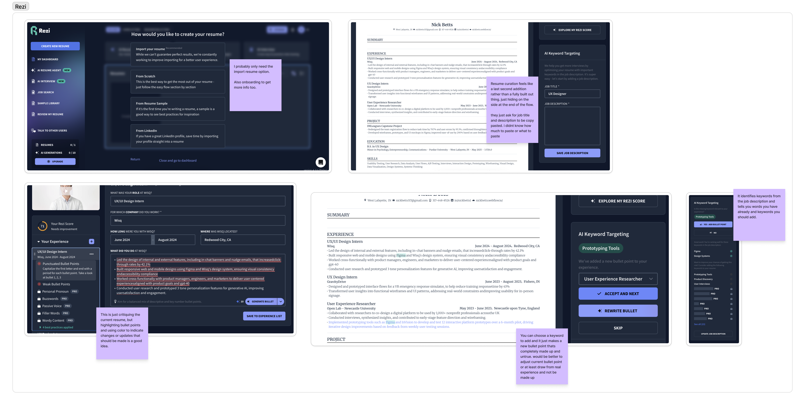
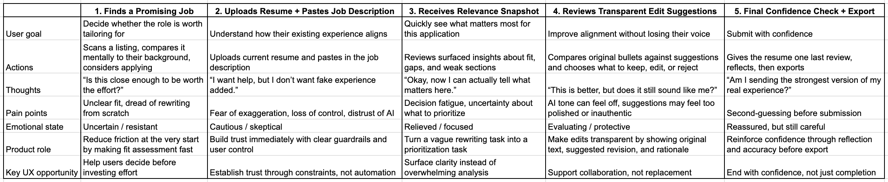
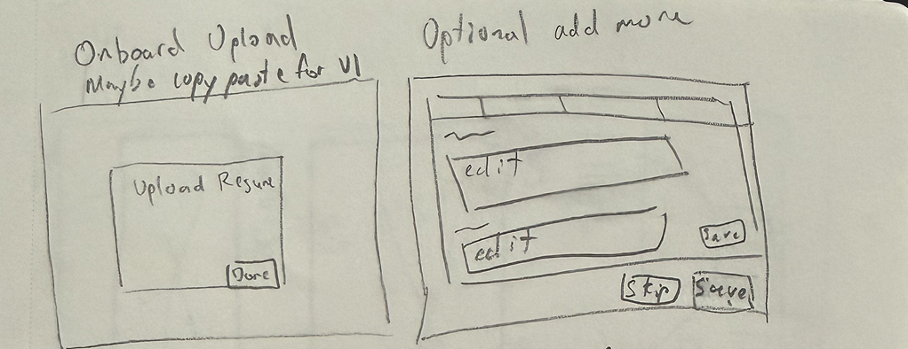
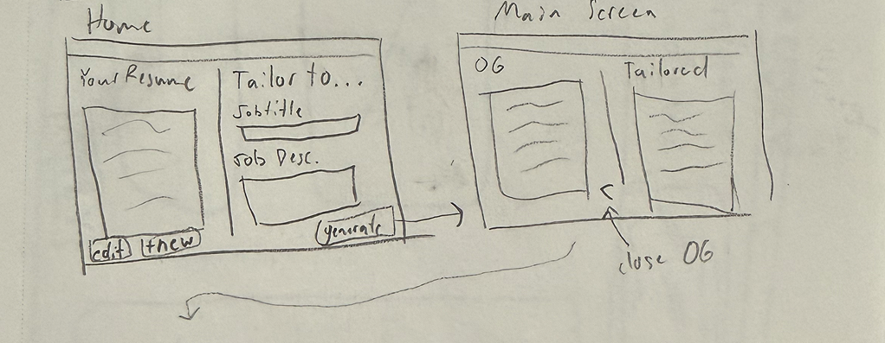
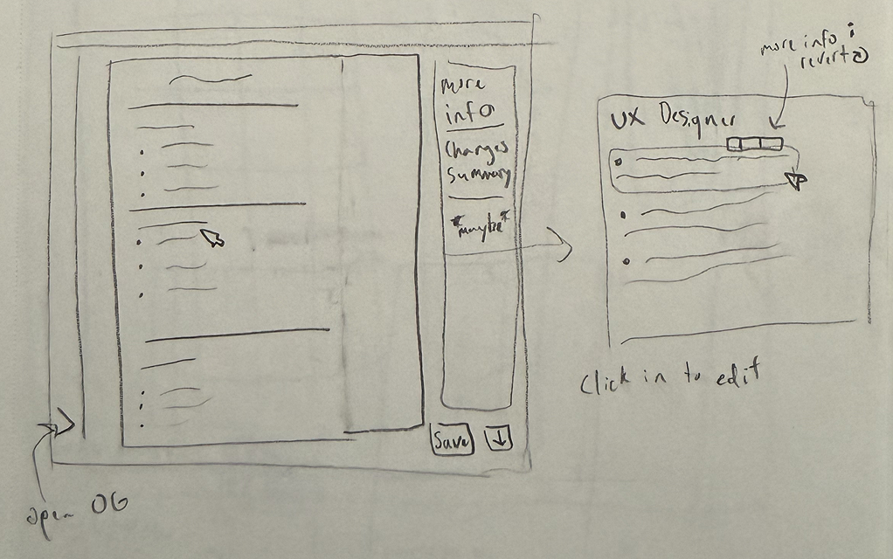
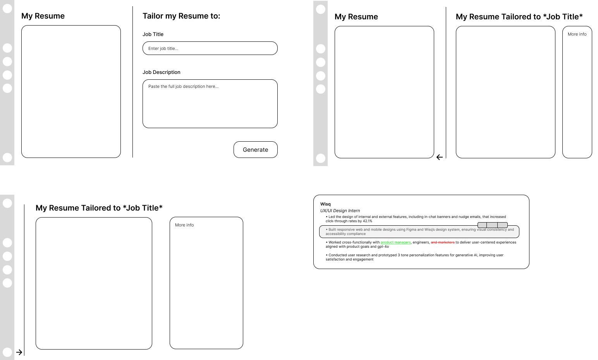
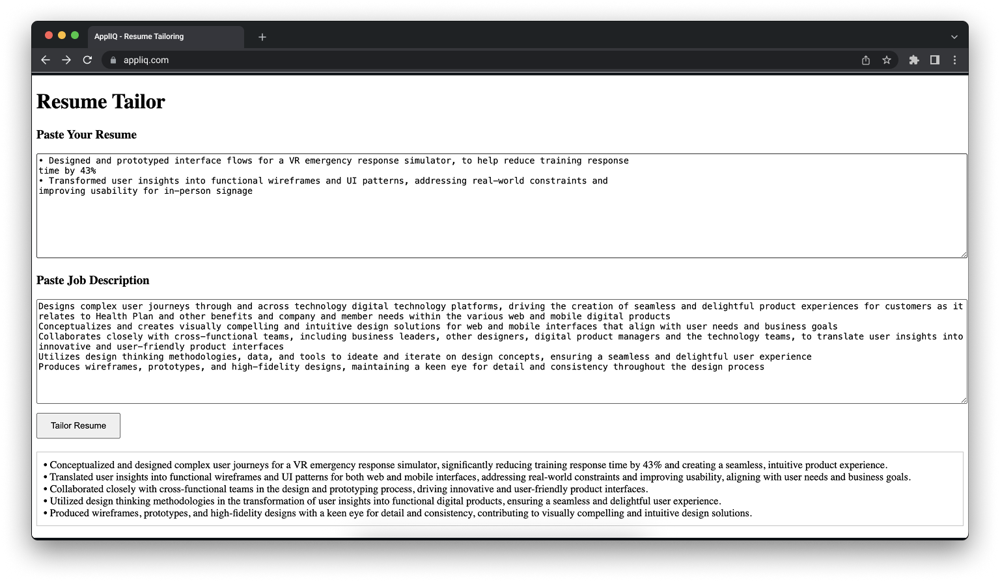

Tailoring a resume should take minutes. It usually takes hours.
Whether you do it manually or use AI, the process is draining. On your own, you end up making dozens of small decisions about every application. What should stay, what should go, and how each line should be written.
AI tools introduce a different problem. Many of them invent metrics, exaggerate what you did, or rewrite your resume in a voice that does not sound like you.
ApplIQ is an attempt to find the middle ground. It is a tool that helps you quickly align your real experience with a specific role, without inventing anything or taking control away from you.
Role
UX Designer, Developer
Scope
Research → Product Design → Working Website
Goal
Reduce the cognitive load and increase the speed of tailoring resumes for different job applications
Research
Many job seekers tailor their resume for every role they apply to. That usually means rewriting bullet points, adding keywords, and deciding which parts of their experience to highlight.
To understand where the actual friction was, I conducted research across three areas: a competitive UX audit of existing AI resume tools, interviews with job seekers across different career stages, and a journey map of the tailoring process.

"Deciding which pieces of my 15-year history are actually relevant to delete or keep."
"Sometimes I just send the standard one if I'm tired."
"Having to explain why my 8 years of experience actually counts for an entry-level role."

Research Takeaways
The real problem was not writing. It was repeatedly deciding how to represent the same experience, over and over, for every new role.
Research Synthesis
The research pointed to a few core issues:
Decision fatigue was the real problem
The difficulty was not writing, but repeatedly deciding how to represent the same experience.
Trust broke when AI overstepped
Exaggerated metrics or rewritten voice made outputs feel unusable, even if they sounded better.
Lack of transparency increased effort
When users could not see what changed or why, they had to re-evaluate everything manually.
No tool made this process quick
Whether users had to review each bullet point, or manually update their resume with new bullet points, the process took way too long.
Early Concepts
Based on those findings, I explored ways to reduce decision-making and increase the speed of the whole tailoring process.
Early ideas included:
Keeping Resume Design — I wanted the tailored outputs to mimic the look and layout of each users unique resume to make comparison as easy as possible.
Resume Before & After — I wanted to display resumes side by side so users could see the changes made easily to determine quickly if they liked the changes made.
Experience Inventory — I wanted users to be able to upload their resume and have their experience autofill into an experience inventory where they could then add even more experience for the AI to pull from when tailoring.
The common thread across these concepts was making this process as quick and easy for users as possible.



Early sketches exploring different directions, layouts, and flows.
At this stage, the focus was on the flow from uploading a resume to downloading a tailored one, how to surface AI suggestions without overwhelming the user, and how user decision-making should happen.
From Concepts to Structure
As the ideas became more concrete, a few patterns started to emerge.
Focus 1
From rewriting to refining
Instead of generating completely new content, the system works on top of existing bullet points, without fabricating or exaggerating experience.
Before
"Managed customer relationships and handled support issues."
After
"Managed customer support workflows and resolved issues across multiple client touchpoints."
Focus 2
From hidden changes to visible reasoning
Every suggested edit includes an explanation showing why it improves alignment with the job description.
Focus 3
From required effort to optional effort
Users should be able to decide how much effort they wanted to give for each resume tailoring. It should be easy to quickly review and download, but also simple to dig deeper into why changes were made, and edit, delete, or revert tailored bullets.
These focuses became the foundation for the first structured designs.

Wireframes showing bullet-level editing, diff view, and layout directions.
Building It to Test the Design
Prototypes are easy to make look good. Code has no patience for assumptions.
To validate the system, I built a working version of ApplIQ rather than stopping at mockups.
The first version was intentionally minimal:

v1 prototype — simple, functional, and intentionally rough.
Where the Design Changed
Building the product exposed issues that were not visible in design.
Resume parsing was inconsistent
Inputs were less structured than expected, which affected output quality.
Prompting required tighter constraints
Without guardrails, the system drifted into exaggeration or vague improvements.
Edge cases broke the flow
Certain bullet types or job descriptions did not behave as expected.
The UI had to rebalance priorities
The resume content needed to stay readable, even with explanations visible.
Each of these forced changes to both the interaction model and the interface.
Iteration
The design evolved alongside the build.
Resume template redesign
Elevated from a default Word template to a polished, ATS-safe document with a consistent navy design language, proper hierarchy, and refined typography.
Workspace interaction system
Replaced passive hover behavior with an intentional toolbar giving users explicit control over their bullets, plus a left accent bar to indicate AI changes without disrupting layout.
More Info panel
Evolved from a basic stat overview into a meaningful dashboard showing AI reasoning, match summary, key terms, gaps, and quick tips to build user trust and confidence in the output.
Full product structure
Expanded from a single tool into a cohesive product with a home page, auth flow, onboarding, profile editor, and consistent design language throughout.
Final System
The following walkthrough demonstrates the full end-to-end experience — from pasting a job description to reviewing AI-tailored bullet changes and downloading a polished, role-specific resume. The entire flow is designed to take under a minute.
Final product UI walkthrough.
Outcomes
ApplIQ is currently in active development and being tested with a small group of friends and early users through dedicated test accounts. Feedback so far has been positive, particularly around the speed of the generation flow and the transparency of the bullet-level AI explanations.
The project demonstrated my ability to take a product from a rough prototype through multiple rounds of design iteration, improving visual hierarchy, interaction design, and information architecture across the resume output, workspace, and overall product structure. Every decision was grounded in a clear product philosophy: the tailoring should be fast, honest, and feel controllable rather than like a black box.
I am continuing to make improvements based on early feedback and am working toward launching the product publicly so anyone can use it. Feel free to ask me if you'd like an account to check it out yourself!
Closing Insight
The most important design lesson from this project was that AI features live or die on user trust. Speed matters, but only if users feel confident in what the AI produced.
Every decision, from the bullet-level explanations to the revert controls to the accent bar indicators, was ultimately about making the AI's work visible and reversible so users could move fast without feeling like they were losing control.